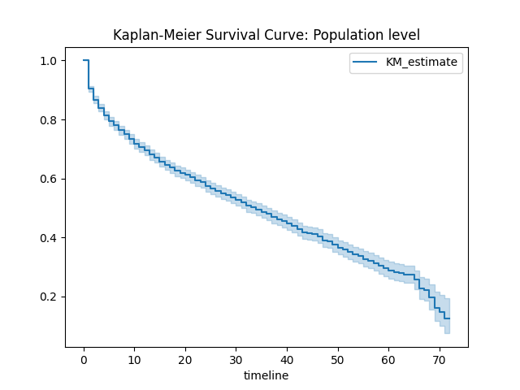
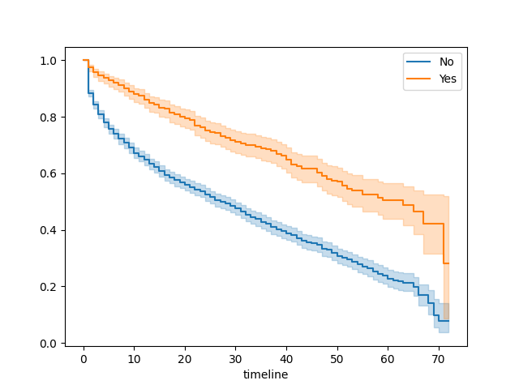
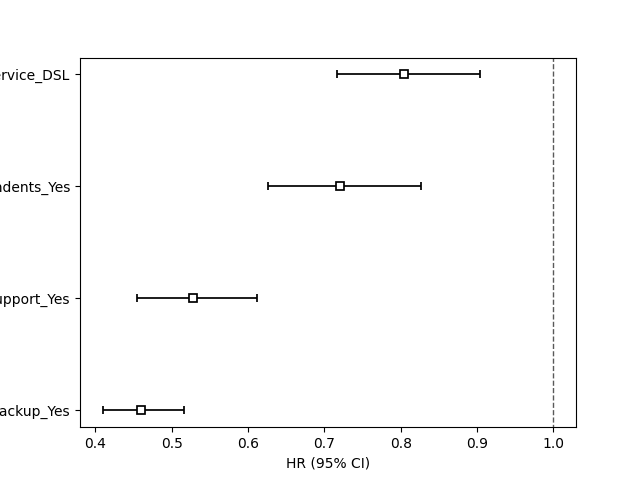
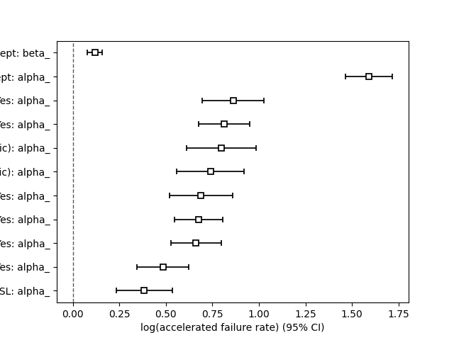
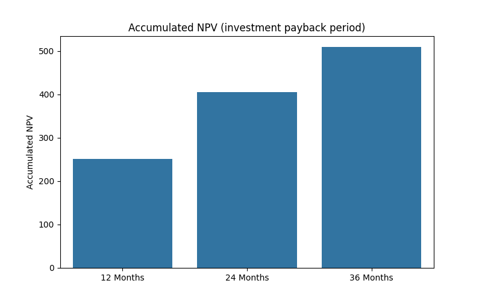

Kaplan‑Meier · Cox 比例风险模型 · AFT 模型 · 客户生命周期价值分析
侯哲妍 (Zheyan Hou) | 2026年4月
本报告使用 IBM Telco Customer Churn 数据集（原始 7,043 条记录）。为了聚焦高流失风险群体，将数据筛选为「月付合同 + 有互联网服务」的客户，最终得到 3,351 条有效记录，其中流失客户占比 46.4%。
| 统计量 | tenure（在网月数） | churn（流失=1） |
|---|---|---|
| 均值 | 19.43 | 0.464 |
| 标准差 | 18.17 | 0.499 |
| 最小/最大 | 1 / 72 | 0 / 1 |
Kaplan‑Meier 方法估计客户随时间变化的留存概率。下图展示了月付互联网客户的整体生存曲线：

中位生存时间为 34 个月 —— 50% 的客户会在签约后 34 个月内流失。这相当于平均“客户寿命”约为 3 年。
以「在线安全服务」为例，使用该服务的客户生存概率明显更高（Log-Rank 检验 p < 0.001）。

Cox 模型同时纳入多个变量，评估各因素对流失风险的独立影响。以下森林图展示了风险比（HR）：

最强保护因素：在线备份（HR=0.46，风险降低54%）、技术支持（HR=0.53）、有家属（HR=0.72）。DSL 用户流失风险比光纤用户低 20%。
AFT 模型直接预测客户生存时间的变化倍数。下图显示各变量对生存时间的“加速因子”：

在线安全 (2.37倍)、在线备份 (2.25倍)、信用卡支付 (2.22倍) 是效果最突出的保护因素。Concordance=0.73，比 Cox 模型更优。
基于 Cox 模型预测的生存概率，假设月利润 30 元、年折现率 10%，计算基准客户（无任何增值服务）的累计净现值：

12 个月 CLV 约 251 元，24 个月约 405 元。假设客户获取成本（CAC）为 200 元，约 10‑11 个月即可回本。
📁 完整代码、图表及交互附录见 GitHub 仓库 | 基于 lifelines 框架实现